STATION DETAIL
One ticker, zoomed, over the wall — with RSI, Williams %R, Stochastic, MACD and the
relative-volume battery. 24 September 2026 · M74 · branch candidate/station-detail-20260924
from origin/station/merge-20260923 @ 69ade6c · nothing deployed.
"I need to have a feature where I can grab a chart that's on a multi-chart layout and view that one in the expanded way without leaving the window. And then another button where I add that view of that ticker to the auto rotating station rotation queue."
"Right now I have just the basic moving averages … the RSI for now, I think we have very easily. I'm not sure if we have the Williams on the hub … and the stochastic, we might not … Stochastic and Williams are the important ones … relative volume … I haven't seen those relative volume batteries in quite a long time."
"The fundamentals view is really interesting, but not on rotation … one ticker that I view on fundamentals view."
1 · The inventory, in plain words
What do we already have, and where?
Two indicator stores exist, they do not hold the same things, and neither holds what the zoomed view needs. Read from the deployed services and tables this afternoon, not from memory:
| Store | What is actually in it | Read from |
|---|---|---|
FMP daily — provider_indicators_current, written by fmp-indicator-export v4 |
16 families per ticker: EMA 5/8/13/21/34 · SMA 50/100/150/200 · WMA 20 · DEMA 20 · TEMA 20 · RSI 14 · standard deviation 20 · WILLIAMS 14 · ADX 14. For MU at 2026-09-23 SETTLED: rsi 62.19, williams −16.57. No stochastic. No MACD. No relative volume. | live table read, 16 rows for MU |
MASSIVE minute — chart API /indicators?provider=MASSIVE&symbol=… |
An 11-spec fixed catalogue: SMA 50/100/150/200 · EMA 5/8/13/21/34 · MACD 12-26-9 · RSI 14. All 11 AVAILABLE for MU, cutoff 2026-09-24T17:36Z. No williams. No stochastic. No relative volume. | live /indicators, 200 |
| The Hub's RSI | Reads the FMP daily row — board RSI at index.html:4967, company tile at :8673,
Station at _provider/provider.js:720, each filtered provider=eq.FMP, timeframe=eq.1day.
So the Hub's RSI is a daily number, whatever timeframe the chart beside it is showing. |
source |
Does FMP provide Williams %R, Stochastic, MACD and relative volume?
Williams: yes, and we already store it (daily, per ticker — the number above).
Stochastic and MACD: not through the path we use. Our own provider client says so in
code — the FMP snapshot sets macd: null with the reason
NOT_IN_FMP_ACCEPTED_CATALOG — and the stored table confirms it: 16 families, no stochastic
row and no macd row for any ticker. Relative volume is not an indicator FMP serves at all;
what exists is company_profile.avg_volume, a 3-month average, which is what the Hub divides by.
One check I could not make the way the brief asked. The brief said to confirm
this with one live call through the existing backend key. The FMP key is not on this machine: the chart
API's secrets are R2 and Supabase only (listed by name, no values), and the key lives in the Supabase
function environment. I do not extract credentials, so I did not make a keyed call. FMP's own
documentation pages answer 403 to a fetch, so that route was closed too. The evidence above is
stronger than a single call would have been: it is what that key actually returned, stored, for every
ticker — plus the writer's own catalogue constant naming the absence.
Where did the Hub's relative-volume batteries go?
They are still in the Hub's code. Their data stopped. The batteries read
board_volume (rvol_at_time, cum_rvol, session_rvol), and that
table holds 193 rows, every one of them stamped 2026-07-06T18:03Z — nothing has written to
it in eleven weeks, and session_rvol is null in the newest rows. The Hub's own comment records
the fallback it took at the time: rvol now comes only from
live_quotes.volume ÷ company_profile.avg_volume, "batteries for the ~122 tickers that have live
volume, — for the rest". So: the batteries did not break, their feed stopped, and the
fallback covers a third of the board.
That is why the detail view computes relative volume from bars instead of reading it: the bars are
current, and board_volume is not.
2 · What was built
| File | What it is |
|---|---|
station-shells/detail-v1/index.html | the zoomed view: price + cloud ribbon, RSI, Williams, Stochastic, MACD, relative volume, a timeframe row, + ROTATION and CLOSE |
station-shells/detail-v1/indicators.js | the arithmetic, on its own: pure functions, no fetch, no DOM, no clock — the file the tests prove |
station-shells/fundamentals-v1/index.html | one ticker, stored FMP fundamentals, every number with its date and its table |
deck/detail.js | expand-in-place overlay, the per-device rotation queue, and the DETAIL/FUNDAMENTALS menu entries |
deck/index.html | three marked hook lines only (M74 HOOK): load the file, attach a badge per chart pane, add the menu entries. deck/scenes.js is untouched, so M69 and this lane cannot collide there. |
tests/station-detail-indicators.test.mjs · tests/station-detail-view.test.mjs | 23 tests, all passing |
STATION_ROUTES.md | the two new shells and the two new served files, documented in the inventory |
3 · The detail view
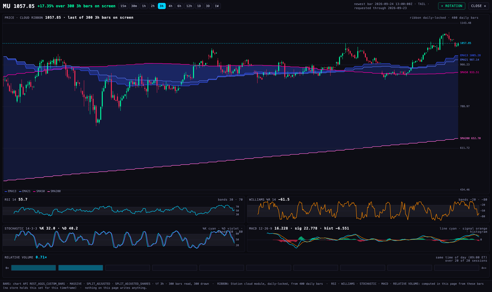
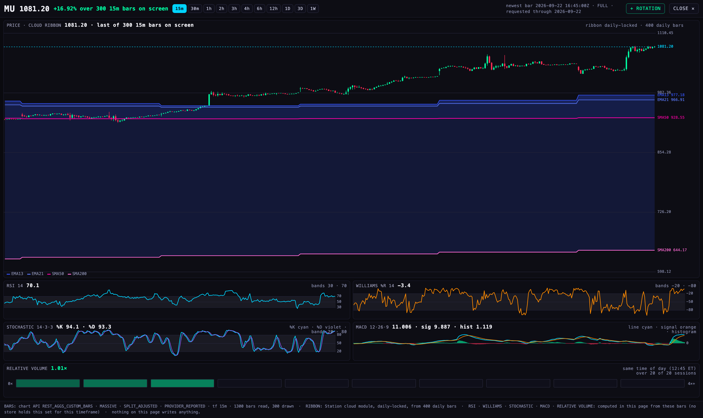
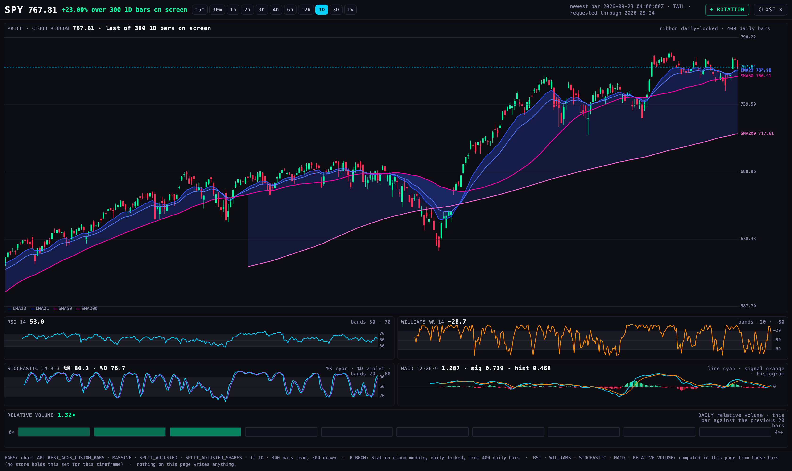
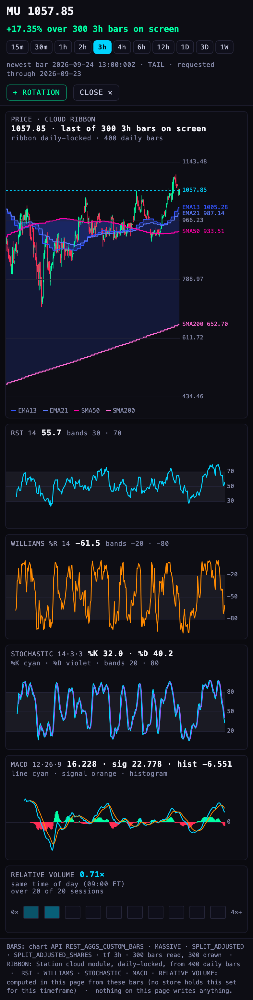
4 · Expand in place, and "+ rotation"
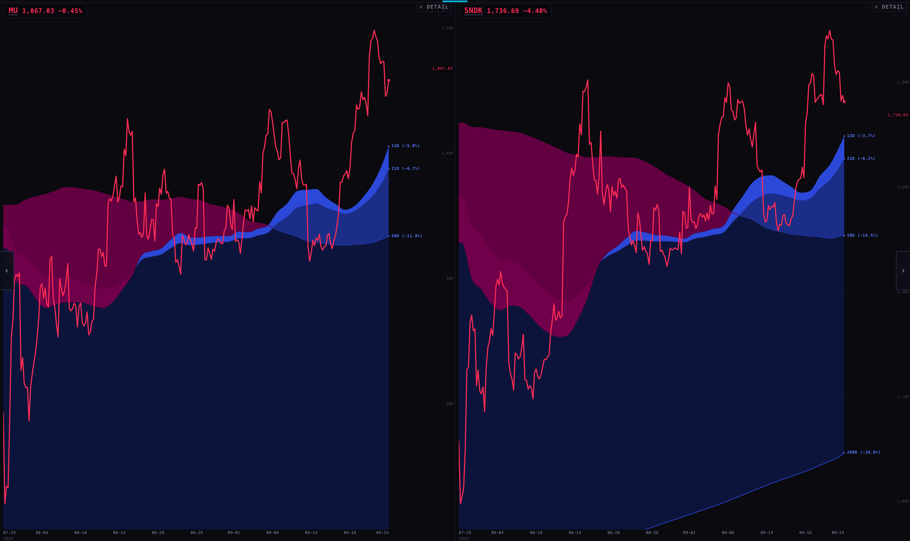
⤢ DETAIL badge.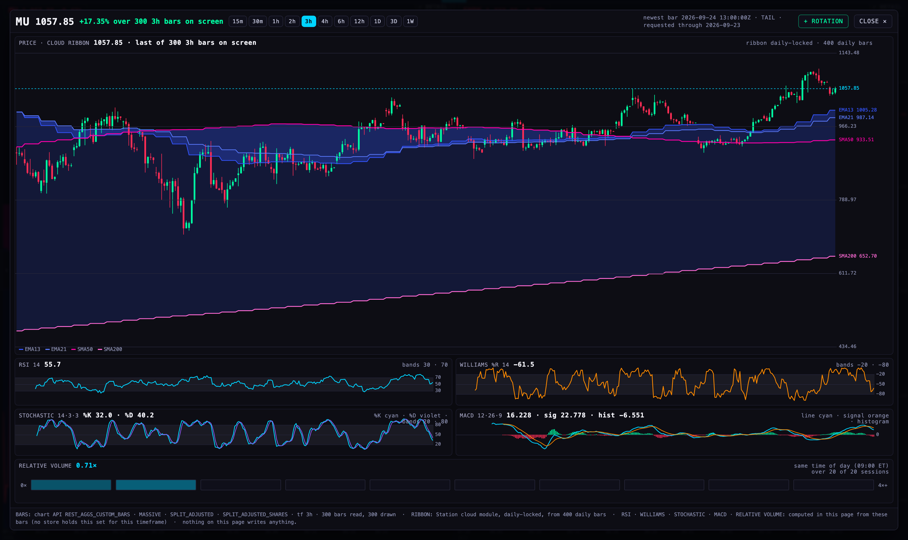
⤢ DETAIL badge on the chart pane; Esc or a click on the wall returns.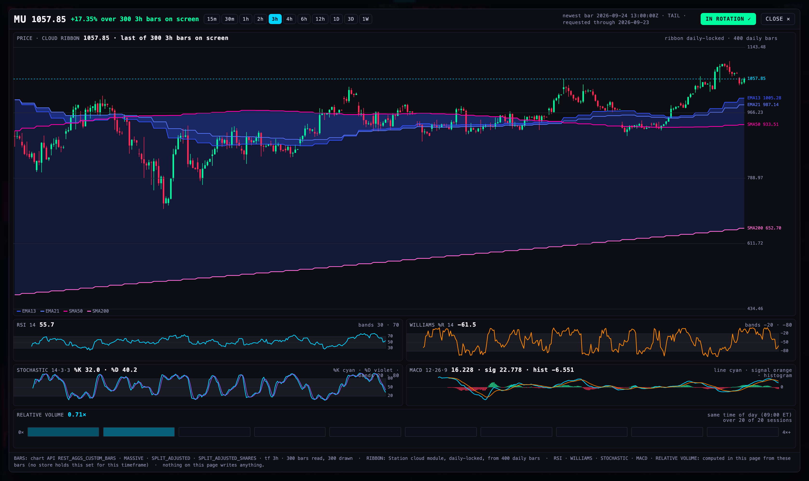
+ ROTATION → IN ROTATION ✓, and
localStorage["station.detail.rotation"] became
[{"ticker":"MU","range":"3h","added":"2026-09-24T17:59:08.962Z"}] — captured from the running
browser, not asserted.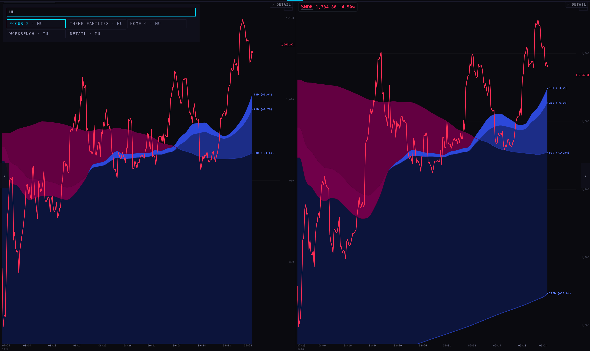
MU returns FOCUS 2, THEME FAMILIES, HOME 6, WORKBENCH and DETAIL · MU
(unfiltered).{kind=link}
What opens it, and the one honest deviation. Alan said "grab a chart … and view that
one". A click inside the chart cannot reach the deck: the pane is an iframe of the pinned chart
shell, and inside that shell a single click is already the crosshair and a double click already
resets that chart's view (chart-v1/index.html:2333). Taking either gesture would break
something Alan uses, in a shell this lane may not edit. So the way in is the deck's own ⤢ DETAIL
badge on each chart pane, plus a double-click on the pane's title. deck/detail.js also already
answers a chart-expand message, so the day the chart shell offers its own gesture, no code here
changes.
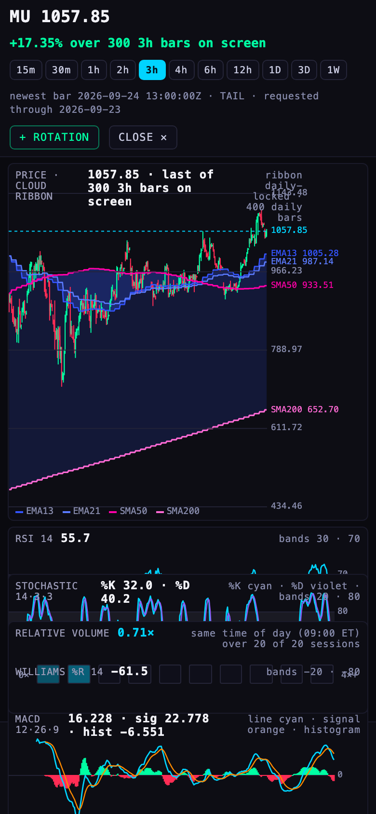
isOpen false, #detailOverlay count 0,
and the wall's own four frames still mounted — the detail frame is removed, not hidden.5 · Fundamentals — one ticker, from what we store
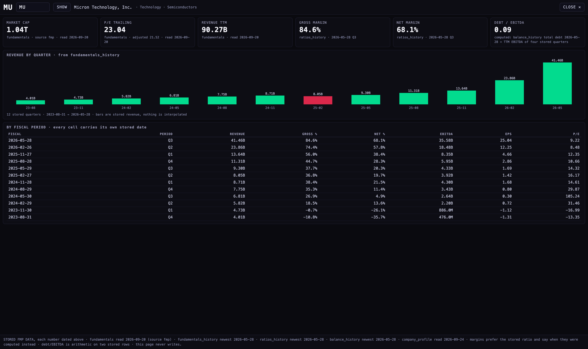
fundamentals (source fmp, read 2026-09-20);
gross 84.6% and net 68.1% from ratios_history at 2026-05-28 Q3; debt/EBITDA 0.09 computed from
balance_history total debt ÷ four stored quarters of EBITDA, and it says so. Twelve stored
quarters of revenue, and a quarter that declined is drawn in red.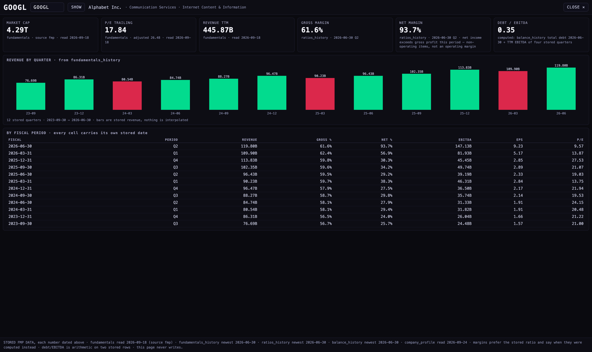
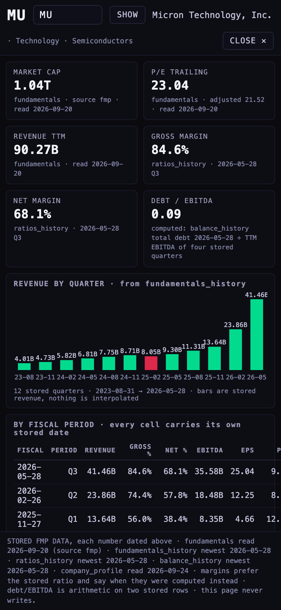
It is reached from the menu and is not in the rotation: ROTATION_SCENES still
holds the curated nine, and a test fails if any DETAIL or FUNDAMENTALS id ever appears there.
6 · The numbers, checked against arithmetic done twice
Two independent checks, because a chart that draws a confident wrong number is worse than no chart.
By hand, in the tests
An 18-bar series regular enough to work on paper (closes 100 102 101 103 …, high = close + 1, low = close − 1). Every expected value is derived in the test's own comment:
| Reading | Worked out by hand | Module |
|---|---|---|
| RSI(14) at bar 14 | 7 gains of 2 and 7 losses of 1 → avg gain 1, avg loss 0.5, RS 2 → 100 − 100/3 = 66.6667 | match |
| RSI(14) at bar 15 | Wilder smoothing: (1×13+2)/14 ÷ (0.5×13)/14 → 69.7674 | match |
| Williams %R at bar 14 | high 109, low 100, close 107 → (109−107)/9 × −100 = −22.2222 | match |
| Stochastic raw %K at 13/14/15/16/17 | 90 · 77.7778 · 90 · 77.7778 · 90 | match |
| %K and %D at bar 17 | means of three: 85.9259 and 84.5679 | match |
| EMA seeding | ema(2) of 1,2,3,4 = —, 1.5, 2.5, 3.5 (seeded with the simple mean, as TradingView does) | match |
| MACD(2,3,2) of 1…6 | line 0.5 from bar 2, signal 0.5, histogram 0; on 12/26/9 the line starts at bar 25 and the signal at bar 33 | match |
| Relative volume, time of day | 100, 200, 300 at 10:30 ET on three sessions, today 400 → 2.00×, n=3 of 20, marked thin; a 17:30 bar of 9999 does not vote | match |
| Relative volume, daily | 250 against twenty 100s → 2.50× | match |
| A flat window | %R and %K are undefined when high = low → null, not 0, not 50 | match |
Against a second implementation, on the real bars
Every value the page displayed was recomputed in Python — a different language, written separately,
reading the same /candles payload:
| MU · 3h · page | MU · python | SPY · 1D · page | SPY · python | |
|---|---|---|---|---|
| RSI 14 | 55.7 | 55.7 | 53.0 | 53.0 |
| Williams %R 14 | −61.5 | −61.5 | −28.7 | −28.7 |
| Stochastic %K | 32.0 | 32.0 | 86.3 | 86.3 |
| Stochastic %D | 40.2 | 40.2 | 76.7 | 76.7 |
| MACD line | 16.228 | 16.228 | 1.207 | 1.207 |
| MACD signal | 22.778 | 22.778 | 0.739 | 0.739 |
| MACD histogram | −6.551 | −6.551 | 0.468 | 0.468 |
| Relative volume | 0.71× (09:00 ET, 20 of 20) | 0.71× | 1.32× (daily, 20) | 1.32× |
Sixteen of sixteen. Bars: MU 3h newest 2026-09-24T13:00Z, SPY 1D newest 2026-09-23T04:00Z — a daily bar belongs to the session that closed, which is why the two stamps differ.
7 · Load
8 · What could be wrong
- The chart API will not answer a preview origin. It echoes
station.scintillahub.aiandscintillahub.aiand refuses everything else — a*.vercel.apppreview getshttps://scintillahub.aiback and the browser blocks the read. That is pre-existing and it affects the wall's chart panes too, but it means this view can only be judged on the product host, and it is why the screenshots were taken with the harness relaying the API's real bytes to a page served from 127.0.0.1. Nothing in a payload was altered. - An oscillator line is drawn shorter than it is computed. The readings use every bar read — 1,300 on a 15m timeframe — while the pane draws the newest 300 of that series. The current value is therefore better warmed up than the visible line suggests, which is the right way round, but a line that starts at the left edge of the pane did not start there in the arithmetic.
- The ribbon here is not pixel-identical to the wall's. Same module, same daily-locked values, same palette and the same labels — but chart-v1 tiles its clouds with split polygons so the fastest cloud owns any overlap, and this view fills each pair straight. Where two clouds overlap, the shading can differ slightly from the wall. The numbers cannot.
- The relative-volume slot is the provider's bucket, not the session's. On MU 3h the slot reads 09:00 ET, which is the bar the provider anchors before the 09:30 open. The comparison is like for like — the same bucket across sessions — but the label is the provider's clock.
- The battery needs a wide read, and now takes one. A 15-minute session carries about 64 extended-hours bars, so twenty sessions is ~1,300 bars. The view reads that many and draws the newest 300 — checked live: MU 15m reports "20 of 20 sessions" where a 300-bar read reported 4. Where history really is short the battery still says "n of 20" and means it; it never silently averages fewer.
- A settled daily bar lags the intraday one. SPY 1D newest is the previous session while MU 3h is today — correct, and worth reading before comparing the two views side by side.
- The rotation queue is a list, not a slideshow. Pressing
+ ROTATIONstores the ticker per device. It does not join auto-rotate — by the dispatch, that waits for Alan, and the coordinator promotes favourites intoscenes.js. If Alan expects the wall to start showing MU on its own after pressing it, it will not, and that is deliberate. - Headless renderers of the live wall are fragile. The first attempt at this measurement died mid-window, and a dropped relay connection killed another. Both are properties of the harness, not of the Station: the runs below report the window they actually observed, the processes they actually counted, and any renderer death or relay failure inside it.
- Twenty pre-existing test failures at the base commit (574 tests, 554 pass at
69ade6c) are unchanged by this branch — same 20, none new. Among them the route inventory's count sentence, which says 65 HTML surfaces where the tree now has 97; other lanes' deliverable pages are the drift. I documented my own four paths rather than add to it. - Not done: nothing deployed, nothing pushed, no TradingView or
INDICATOR_LAB/file opened,deck/scenes.jsuntouched, and no write of any kind — both shells are read-only and a test fails if a POST, PUT, PATCH or DELETE ever appears in either.
9 · For the coordinator
- Branch
candidate/station-detail-20260924off69ade6c; the only shared-file edits are three lines indeck/index.html, each markedM74 HOOK, and four rows inSTATION_ROUTES.md. - Promoting favourites into
scenes.jslater: readlocalStorage["station.detail.rotation"]—[{ticker, range, added}], newest last, capped at 24, one entry per ticker. - If the chart shell ever gains its own expand gesture, have it post
{sc:"chart-expand", ticker, range};deck/detail.jsalready listens.